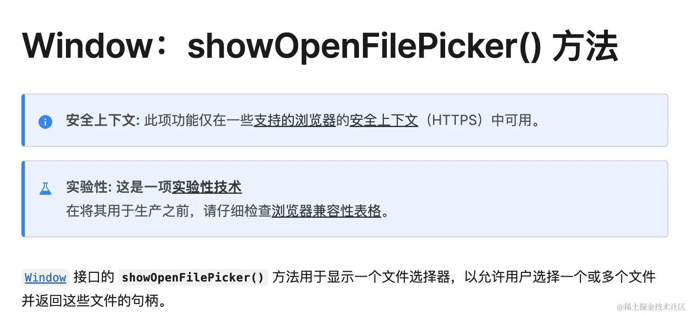
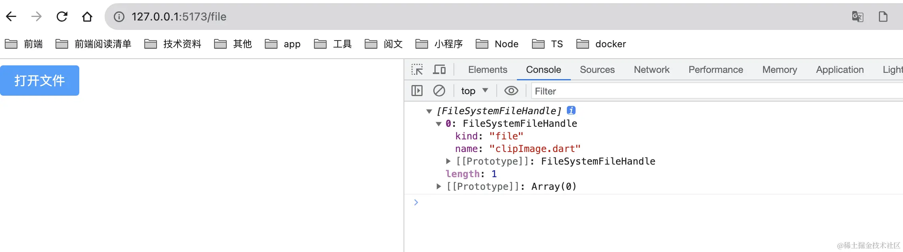
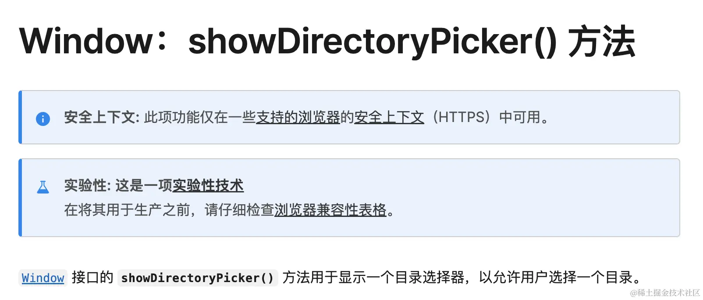
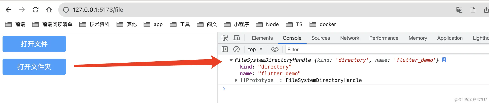
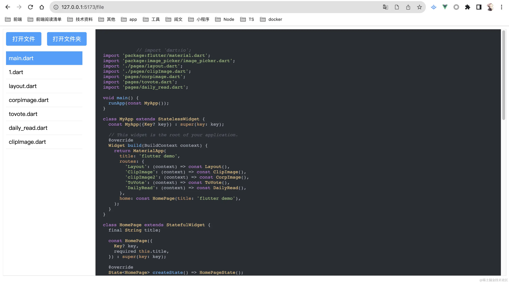
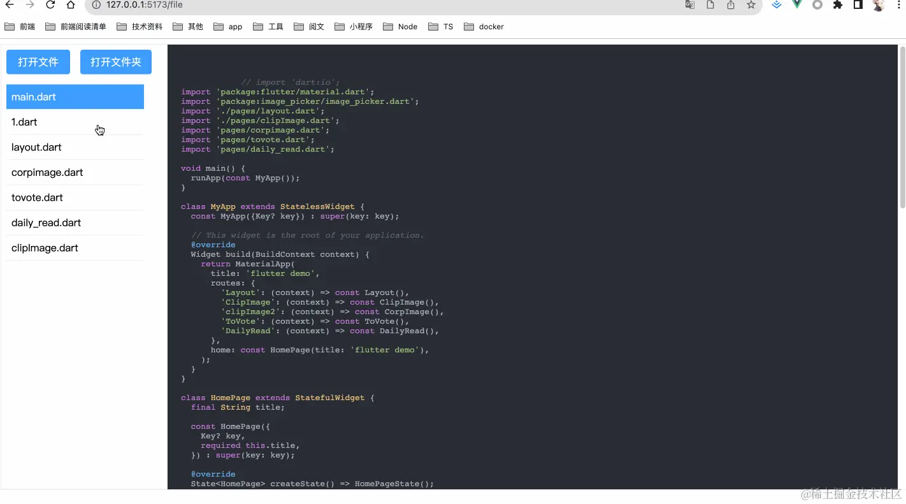

用来选择文件

showOpenFilePicker();
multiple：布尔值，默认为false。为true表示允许用户选择多个文件excludeAcceptAllOption：布尔值，默认为false。默认情况下，文件选择器带有一个允许用户选择所有类型文件的过滤选项（展开于文件类型选项中）。设置此选项为 true 以使该过滤选项不可用。types：表示允许选择的文件类型的数组返回一个promise对象，会兑现一个包含 FileSystemFileHandle 对象的 Array 数组。
<template>
<div class="open_file" @click="openFile">打开文件</div>
</template>
<script setup lang="ts">
const openFile = async () => {
const res = await window.showOpenFilePicker();
console.log(res);
};
</script>
默认只能打开一个文件，可以传入multiple:true打开多个文件

用来选择目录

属于浏览器全局方法，直接调用即可
showDirectoryPicker();
multiple：布尔值，默认为false。为true表示允许用户选择多个文件excludeAcceptAllOption：布尔值，默认为false。默认情况下，文件选择器带有一个允许用户选择所有类型文件的过滤选项（展开于文件类型选项中）。设置此选项为 true 以使该过滤选项不可用。types：表示允许选择的文件类型的数组返回一个promise对象，会兑现一个包含 FileSystemFileHandle 对象的 Array 数组。
<template>
<div class="open_file" @click="openFile">打开文件</div>
<div class="open_file" @click="openDir">打开文件夹</div>
</template>
<script setup lang="ts">
const openFile = async () => {
const res = await window.showOpenFilePicker({
// multiple: true,
});
console.log(res.length);
};
const openDir = async () => {
const res = await window.showDirectoryPicker();
console.log(res);
};
</script>

FileSystemFileHandle提供了一些方法可以用来获取和操作文件
getFile：返回一个Promise对象，用于获取文件；createSyncAccessHandle：返回一个FileSystemSyncAccessHandle对象，用于同步访问文件；createWritable：返回一个Promise对象，用于创建一个可写流，用于写入文件；FileSystemDirectoryHandle对象是一个代表文件系统中的目录的对象，它同样提供了方法来获取和操作目录
entries：返回一个AsyncIterable对象，用于获取目录中的所有文件和目录；keys：返回一个AsyncIterable对象，用于获取目录中的所有文件和目录的名称；values：返回一个AsyncIterable对象，用于获取目录中的所有文件和目录的FileSystemHandle对象；getFileHandle：返回一个Promise对象，用于获取目录中的文件；getDirectoryHandle：返回一个Promise对象，用于获取目录中的目录；removeEntry：返回一个Promise对象，用于删除目录中的文件或目录；resolve：返回一个Promise对象，用于获取目录中的文件或目录；entries、keys、values这三个方法都是用来获取目录中的所有文件和目录的，它们返回的都是一个AsyncIterable对象，我们可以通过for await...of语法来遍历它。
了解完这些知识点，我们就可以来开发一个简陋网页版编辑器了，初期只包含打开文件、打开文件夹、查看文件、切换文件
编辑器大概长这样：

const openDir = async () => {
const res = await window.showDirectoryPicker({});
const detalAction = async (obj: any) => {
if (obj.entries) {
const dirs = obj.entries();
for await (const entry of dirs) {
if (entry[1].entries) {
// 文件夹，递归处理
detalAction(entry[1]);
} else {
// 文件
fileList.value.push({
name: entry[0],
path: obj.name,
fileHandle: entry[1],
});
}
}
}
};
await detalAction(res);
showCode(fileList.value[0], 0);
console.log("--fileList--", fileList);
};
这里主要是递归处理文件夹，返回一个文件列表
const showCode = async (item: any, index: number) => {
const file = await item.fileHandle.getFile();
const text = await file.text();
codeText.value = text;
currentIndex.value = index;
};
使用highlight.js来高亮展示代码
<div class="show_code">
<pre v-highlight>
<code class="lang-dart">
{{ codeText }}
</code>
</pre>
</div>
最终效果如下：

想不到吧，这种功能现在纯前端就能够实现了，当然还可以做的更复杂一点，包括修改保存等功能，保存可以使用showSaveFilePickerAPI，它可以写入文件，同样是返回一个promise。感兴趣的可以试着完善编辑器的功能。